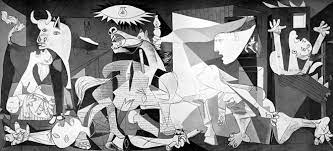
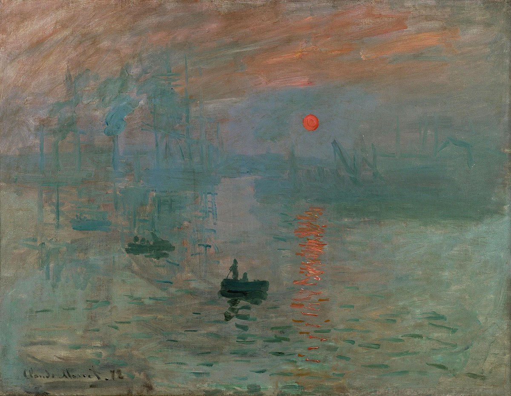

The School of Athens
By Raphael
The School of Athens is a fresco by the Italian Renaissance artist Raphael. It was painted between 1509 and 1511 as a part of Raphael's commission to decorate the rooms now known as Stanze di Raffaello in the Apostolic Palace in the Vatican. It depicts a congregation of philosophers, mathematicians and scientists from Ancient Greece including Plato, Aristotle, Pythogoras, Archimedes. Italian artists Leonardo Da Vinci and Michelangelo are also featured in the painting shown as Plato and Heraclitus respectively. For more information, click here.

Guernica
By Pablo Picasso
Guernica is a large 1937 oil painting by Spanish artist Pablo Picasso. It is one of his best-known works, regarded by many art critics as the most moving and powerful anti-war painting in history. It is exhibited in the Museo Reina Sofia in Madrid. It is made exclusively of the colors grey, white and black. The painting portrays the suffering wrought by violence and chaos. It depicts a gored horse, a bull, screaming women, a dead baby, a soldier and flames. For more information,click here.

Impression, Sunrise
By Claude Monet
Impression, Sunrise is an 1872 painting by Claude Monet first shown at what would become known as the "Exhibition of the Impressionts" in Paris in April, 1874. The painting is credited with inspiring the name of the Impressionist movement. It depicts the port of Le Havre, Monet's hometown. It is now displayed at the Musee Marmottan Monet in Paris. For more information, click here.
.jpg)
Sistine Chapel Ceiling
By Michelangelo
The Sistine Chapel ceiling painted in fresco by Michelangelo between 1508 and 1512, is a cornerstone work of High Renaissance art. The Sistine Chapel is the large papal chapel built within the Vatican between 1477 and 1480 by Pope Sixtus IV, for whom the chapel is named. The ceiling's various painted elements form part of a larger scheme of decoration within the chapel. THe paintings were commissioned by Pope Julis II. For more information, click here.